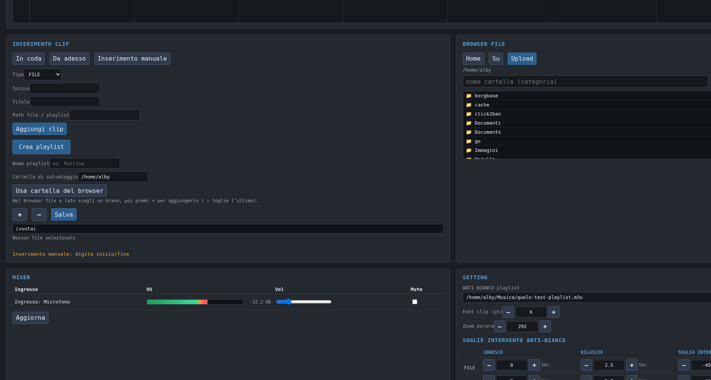
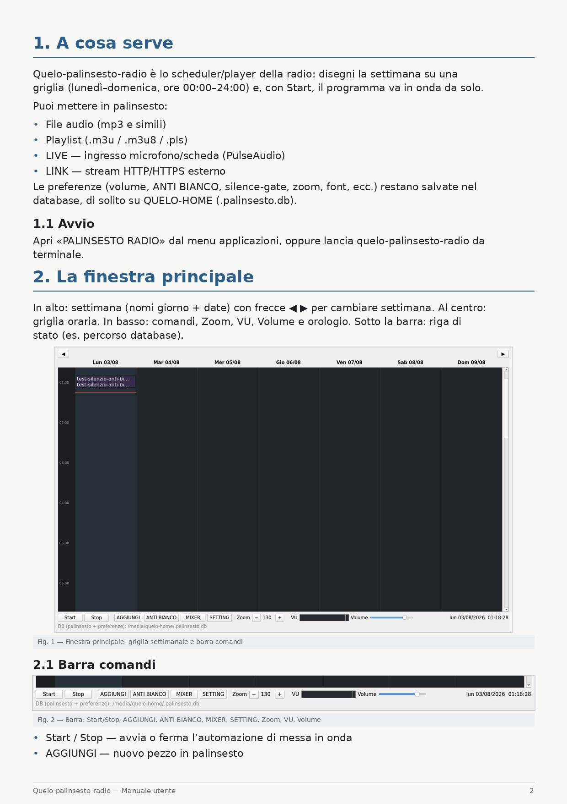
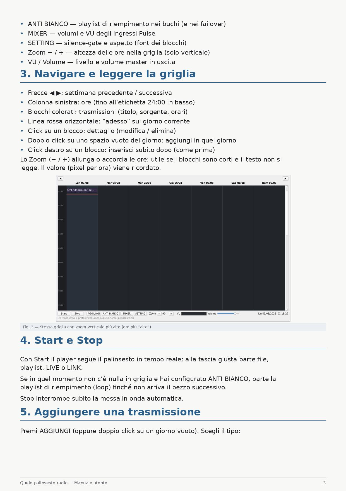
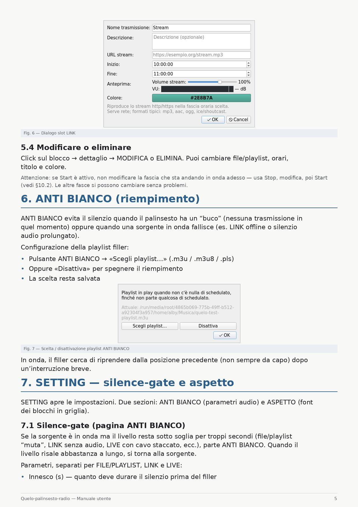

Quelo Palinsesto Radio
Palinsesto automatico per radio · Linux · Desktop + Web
Progetta la settimana in griglia (FILE, PLAYLIST, LIVE, LINK), metti in onda con un click, riempi i buchi con ANTI BIANCO. Controlla dalla GUI desktop o dal browser (--web-only).
Versione: vedi file VERSION nel repository · Archivio in .tar.gz, .zip, .rar
Stesso contenuto in tre formati (cartella dist/ del repo):
Avvio tipico: ./bin/quelo-palinsesto-radio --web-only --bind 0.0.0.0 --port 8890



Avvio: menu applicazioni «PALINSESTO RADIO» oppure ./bin/quelo-palinsesto-radio



Portable su Linux (varie distro e architetture) senza modificare il codice, se rispetti le versioni minime: tabella_dipendenze_obbligatorie.md. Nomi pacchetto Debian: dipendenze.txt.